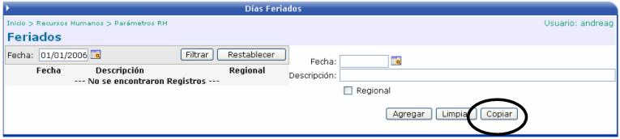
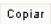
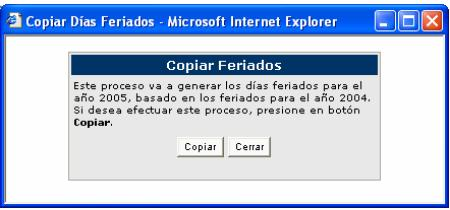

Aquí se lleva un control de los días feriados que hay en el año.

Se debe de seleccionar la fecha del feriado, definir una descripción y seleccionar si el feriado es regional o no.
El botón de

genera los días feriados para el siguiente año, basado en los feriados del año en curso. Si se desea realizar este proceso hay que presionar el botón de Copiar
